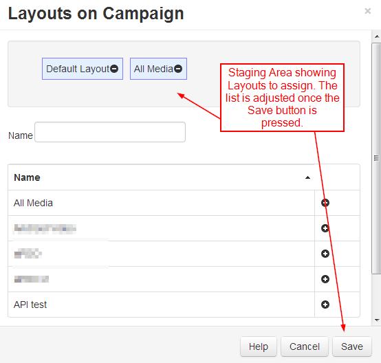

Campaigns
Layouts can be grouped together into an ordered list to create Campaigns. A Campaign can then be Scheduled to play the grouped Layouts in a set sequence.
Campaigns are administered from the Design section of the CMS Menu:
Create a Campaign
Click on the Add Campaign button at the top of the grid and complete the appropriate form fields:
Folders
Campaigns can be optionally saved to Folders.

Layouts are assigned using the plus icon, once pressed the Layouts are automatically moved to the staging area. Layouts can be removed from the staging area using the minus icon.
If users should also have access to the Layouts/Layout content, ensure that this is also saved to the same Folder!
- Provide a Name for easy identification purposes within the CMS.
- Include optional Tags to organise and make it easier to search for.
- Tick to enable cycle based playback for this Campaign.
- Provide a Play Count to determine how many ‘plays’ a Layout should have before moving onto the next Layout in the Campaign.
When you schedule a Campaign with cycle playback enabled, each time the scheduled event appears only 1 Layout will be shown for the set count from the Campaign.
Assigning Layouts to a Campaign
- Layouts are assigned using the plus icon. Once pressed Layouts will show in the staging area.
- Layouts can be removed by clicking on the minus icon next to a Layout in the staging area.
- Re-order Layouts in the staging area by drag and drop to ensure that Layouts play in your designed sequence.
- Click Save to keep changes.